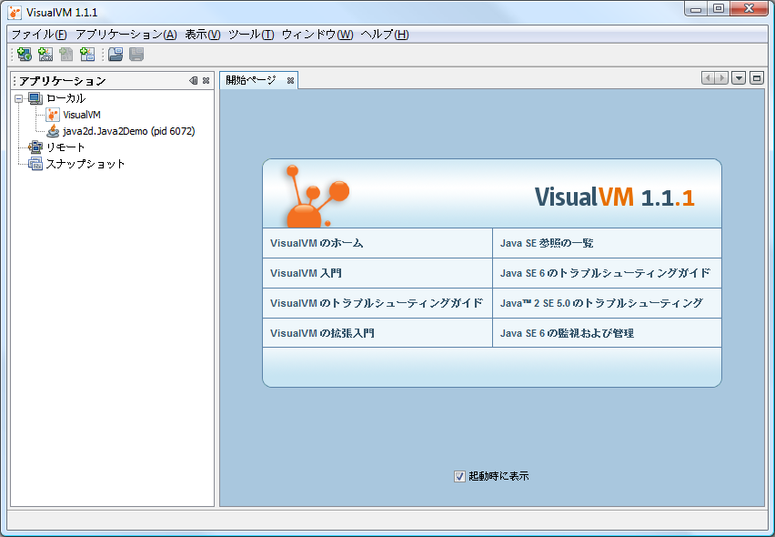

VisualVM は、Java 仮想マシン (JVM) で実行中の Java テクノロジベースのアプリケーション (Java アプリケーション) に関する詳細情報を表示するための、ビジュアルインタフェースを提供するツールです。VisualVM は、JDK (Java Development Kit) ツールによって取得された JVM ソフトウェアに関するデータを編成し、複数の Java アプリケーションに関するデータをすぐに表示できるような方法で、情報を提示します。ローカルアプリケーション、およびリモートホストで実行中のアプリケーションに関するデータを表示できます。また、JVM ソフトウェアインスタンスに関するデータを取り込んでローカルシステムに保存し、データをあとで表示したり、ほかのメンバーとデータを共有したりできます。
Java VisualVM の機能をすべて活用するためには、Java SE (Java Platform Standard Edition) version 6 を実行するようにしてください。
VisualVM の zip アーカイブをローカルシステムにダウンロードして抽出したあと、展開したアーカイブの bin ディレクトリに移動し、VisualVM の実行可能ファイルをダブルクリックするか、コマンド (shell) プロンプトに次を入力します。
visualvm
はじめて VisualVM を起動する場合、使用許諾契約書への同意を求められます。
Windows の場合、VisualVM の userdir のデフォルトの場所は次のとおりです。
C:\Documents and Settings\<ユーザー>\Application Data\.visualvm\FCS
VisualVM の userdir の場所を検索するには、メインメニューから「ヘルプ」>「製品について」を選択し、「VisualVM の概要」ウィンドウの「詳細」をクリックします。
VisualVM を起動すると、VisualVM のメインウィンドウが開きます。VisualVM のメインウィンドウは、2 つのウィンドウに分かれています。
最初に VisualVM を起動すると、ウィンドウの左側に「アプリケーション」ウィンドウが表示され、メインウィンドウの右側に開始ページが表示されます。開始ページには、VisualVM のドキュメントの Web ページと追加リソースへのリンクがあります。
注: 開始ページは、デフォルトでは VisualVM を起動するたびに開きます。メインメニューから「ヘルプ」>「開始ページ」を選択すると、いつでも開始ページを表示できます。「起動時に表示」チェックボックスを選択解除して、開始ページを非表示にすることもできます。
アプリケーションを起動すると、VisualVM のメインウィンドウの左側に「アプリケーション」ウィンドウが表示されます。「アプリケーション」ウィンドウは、実行中のアプリケーションの詳細を調査するための、主な入場点です。「アプリケーション」ウィンドウではツリー構造が使用されており、ローカルマシンおよび接続されているリモートマシンで実行中のアプリケーションをすばやく表示できます。また、コアダンプにアクセスし (Solaris/Linux)、スナップショットを「アプリケーション」ウィンドウから保存することもできます。
「アプリケーション」ウィンドウのノードを右クリックするとポップアップメニューが開き、そのノードに関連するアクションを実行できます。アクションには、アプリケーションのタブを開く、ヒープダンプおよびスレッドダンプを取得する、メインウィンドウでスナップショットを開くなどがあります。
「アプリケーション」ウィンドウを使用して、データを表示および保存する方法の詳細については、次のページを参照してください。
メインウィンドウには、アプリケーションに関する詳細情報が表示されます。アプリケーションに関するデータを表示すると、各アプリケーションがメインウィンドウのタブで表示され、データを簡単に表示したり移動したりできます。保存したスレッドダンプとヒープダンプも、メインウィンドウで表示されます。
メインウィンドウで表示できるアプリケーションデータについては、次のページを参照してください。
プラグインマネージャーを使用して、VisualVM プラグインセンターからプラグインをインストールすると、VisualVM に機能を追加できます。独自のプラグインを開発して VisualVM の機能を拡張することもできます。このプラグインをアップデートセンターに追加することもできます。
たとえば、VisualVM-MBeans プラグインをインストールすると、アプリケーションのタブに「MBeans」タブが追加されます。これを使用すると、VisualVM 内から MBeans を監視および管理できます。
VisualVM プラグインをインストールするには、次の手順に従います。

VisualVM プラグインの作成の詳細については、次のドキュメントを参照してください。